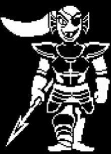

This is a UNDERTALE fanfic written by @LJBoss about a character named Ethan who fell to the underground.
Enjoy!
Ethan walked into the cave of Mount Ebbot, pushing his glasses higher on his nose where they rested, reflecting a purple tint from the metal sheen.
He stepped into the dark cave, his eyes traveling over the strange area in the cave of Mount Ebbot. He set down his backpack and pulled out his notebook, looking around and sketching the strange plants in the cave. He looked around, and when he couldn't find any more, he turned and grabbed his backpack, walking deeper into the dark cave.
He stood breifly on the rock where his backpack sat, thinking. He shrugged, and pulled a sleek, dark purple set of headphones from his backpack and slide them on, pulling out his phone and opening Spotify.
He clicked a button, and "Sweet Child O Mine" began playing over his headphones. He pulled out his notebook, and ventured deeper into the cave. Soon, he passed the last rays of sunlight, and stepped into complete darkness.
As he was walking, he heard a THUNK ahead and slowed, pushing his glasses up and turning down his music with a confused expression. He continued down the path, the music softer over his headphones.
Suddenly, Ethan tripped, and fell, but he didn't hit the earthy and stoney floor of the cave. He continued to fall, his arms flailing to catch his glasses as they blew of in the air rushing past.
He fell for what seemed like hours, before he turned around to see the ground fast approaching, with some sort of mound in the earth at the bottom.
Ethan landed, his glasses clattering onto the ground as his eyes closed, and pain envoloped him.
Ethan woke with his vision blurry, to see a small flower, yellow petals, and white androecium.
He was sitting on a small mound of earth, with the flower sprouting from the ground in front of it.
Ethan's head throbbed with pain, and his leg hurt too bad for him to walk. Suddenly, the flower moved, and two black eyes and a mouth appeared.
Ethan yelped, and tried to scramble backwards, shooting another bolt of pain through his leg. He pulled his notebook from his backpack, and threw it straight at the flower, before quickly scrambling away, holding his camera, readying to throw it.
Ethan's eyes widened, and he pushed his glasses up, taking a photo of the flower before leaning in to inspect it. The flower moved backwards, like the pokemon diglett, and sunk into the ground.
Ethan jumped forward, not caring his leg was injured and leaped to try and catch the flower before it sank. But it was too late, and Flowey was gone.
Ethan just shrank back, scared now. The new being stood over him, her body covered in a white fur. She was wearing a blue and purple dress, her horns perfectly trimmed.
Ethan stood on his splinted leg, walking towards the exit of the ruins.
Ethan turned, and hugged Toriel, who felt like a mother to him after he fell to the ruins. "Goodbye." he whispered, before turning, and walking towards Snowdin town.
Prolouge: The Fall
Chapter 1: The Flower


Chapter 2: The Skelebros

Ethan stepped into Snowdin town, his new purple coat wrapped aroun him as he walked along.
He had learned from Toriel that this was the realm of monsters, and that he had the choice to what he did after he entered Snowdin town.
A few minutes in, a skeleton walked up to him, wearing slippers and a blue sweatshirt.
Behind him, there stood a tall skeleton, with a red cape and a chefs hat. He was very skinny, and had long thin arms and legs. He was wearing some sort of "hip" glasses


Papyrus stepped forward, and a bone shot from behind him, tripping Ethan as he fell to the ground. Sans stepped back with an interested expression, and another bone shot from behind Papyrus and sailed towards Ethans head.
But this time he was ready. Ethan pulled the sword of his back and slashed Papyrus, throwing blood into the air as Papyrus fell back.


"Pretty sure that's YOU" Ethan said, lunging forward and slashing Papyrus in the chest, throwing him backward into the wall where he hit with a loud THUD
Ethan stood, his hair blowing in the cold wind, and threw his sword to the side, walking forward to Papyrus and holding out his hand.
The skeleton took it, and stood, brushing himself of before looking at Ethan and smiling. Sans came up behind him and they both smiled.


Ethan stepped towards the water, cold wind blowing in his hair as he waded towards the waterfall.
By the falls there was a figure, clad in black armour, a red bunch of hair glinting as the waterfall sparkled and the water chilled Ethan's legs.
The figure stepped forward, her hair flapping like a kite in the cool wind of the walls. 
Ethan responded by leaping up, jumping throught the waterfall onto the ledge behind, leaping of the cold stone to slam through the waterfall, sending water and Undyne flying backwards in a torrent of water.
Purple energy shot from Ethan's chest, and a purple heart glowe in the light of the setting sun, illuminating Undyne's face, coated in water and sweat. Her face was cracking, a sliver of disbeleif shining through.
Undyne shot upwards, her eye glinting with a green light, shining around her and flashing into a burst of energy, shooting downwards towards Ethan. He ducked, and it shot past his back, slamming into the ground behind him with a scorching BLAST, blasting into the ground and launching Ethan aside before Undyne landed, a cloud of dust shooting upwards in a burst of wind, whipping Ethan with glowing green light and a burst of air.
As Undyne emerged from the smoke, Ethan shot forward, throwing his sword into Undyne's chest and spraying dust onto the sand of the small sandy beach, the dust being monster blood.
POOF
Undyne dissapeared in a cloud of dust, dissolving into the water and giving it a pale grey tinge, clouding the water and leaving it slightly murky.
Ethan walked forward, looking into the water. There was a white glow under the surface, shining through the murkiest section. Right where Undyne died. Ethan thought.
He stepped forward, reaching under the water and feeling a quartz like gleaming object under the surface. He lifted it, and saw a upside down white heart, gleaming as it's white light shone over his body.
Toriel had told him about these. He had heard the tale and knew, without a doubt,
That it was a SOUL.
Ethan sat, the lights of the stage bright above him. He was sitting in Mettaton Stage, waiting for the start of the show.


Chapter 4: The Show
These are the websites of some friends who supported me! Plz check them out, and PERSERVERE!
Alexa Ford (AKA:"Serious Girl"):
Alexa.com